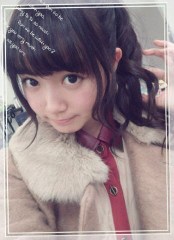

| 2014/02 12 Wed | ひめたん(*>ω<*)そ の407 |
バレて捕まる前に自ら出頭しよう
りんご王国の機密を世界中にバラすとゆー
重罪を犯してしまったのは
この私めです。
どうやら、どうやら禁断の
さゆりんごパンチとひめたんびーむが
ついに交わる時が来たんですね......！
ぜ、ぜんめんせんそう
＼＼\\ ( 'ω' ) //／／
あっこれもりんご姫のご命令だけど
王国民のみなさんは仲良くね♪♪
ぱんちとびーむで
ちょーっとやってくるだけだからね
みなさんは心配しないでーねっ
昨日は個別握手会でしたっ
来てくださったみなさん
本当にありがとうございました♪♪
レポ！ひめたんが元気にレポするよー！
◎４部

クラシカルなワンピース × ポニーテール
◎５部

くまさん？ × おろし巻き
あなたはどっちのひめたんがお好き？
昨日来てくださった方の反応を見てると
ぼーいずには４部
おにゃのこには５部が好評だった気がする。
個人的には５部の格好のが好きなのは
ひめたんもおにゃのこだからかな(＊^ω^＊)
みりりん (渡辺みり愛ちゃん)の頭は
ひまわりが咲いておる！
まーいつものことなんだがかわうーううーうっ
昨日は1stライブのDVDのお話とか
2ndのライブのお話とか
NOGIBINGO!2の感想とか！
やっぱ期間が長かったから
それだけお話したいことたくさんあって
なんか濃ゆかったなー(＊^ω^＊)
はじめましての方も
たくさんいらっしゃって
お会いできて嬉しいよー♪♪
ほんとにみなさんよく来てくれたね(´；；｀)
遠征チームで前のりチームは
飛行機飛ばなかったりとか
あったみたいだし
大丈夫かなーって思ってたの
残念ながら行けなかったよーって方も
寂しい思いさせちゃってごめんね(´；；｀)
次はお会いしましょー♪
あーそれからっ
名札忘れたーって方多かったよー(笑)
まあひめたんも
日記で言うの忘れてたんだけどね( ´ ▽ ` )
ひめたんはちゃんと名札つけたんだよー
でね！なんかね！
名札かわいくしてくれてる方もいっぱいいて
おーさすがひめきゅん！ってなったの
ひめたんも見習おーっとー♪♪
次は３月かー遠いなー(´；；｀)
その前に横アリ行くよーって方は......
それでも10日くらい先じゃん！
遠いよー(´；；｀)

 ひめたんはこってり系のラーメンと
ひめたんはこってり系のラーメンと
可愛い系のラーメンとあっさり系のラーメンの
どれが好き？
ねーひとつ聞いてもいいかな
可愛い系のラーメンってどんなのかな
ひめたん気になって気になって(・∀・)
生クリームがトッピングされてたりしてー
はー食べる気失せるなー♪♪
ひめたん一家のカレーって
隠し味とかあるのー？
チョコレート入れたり
りんご入れたりしてたような気がするっ
あ、いや、そんな甘ったるくなるんじゃなく
マイルドになるよ＊
ひめたんは、イライラしたときどーしてる?
教えてねんっw
ひめたんにイライラした時なんて
あるのかなーどーなんかな( ´ ▽ ` )すっとぼけ
きゅんきゅん王国の住民ってどんな人？
穏やかで優しくて面白くて
いつもにこにこしてて
りぼんが似合ってぷりんが大好き(強要)な人
だと思います♪♪
そんなきゅんきゅん王国の住人さんが
ひめきゅんさんがあたしは大好きです！
僕はモテてモテてほとほと困っています！
モテなくなる方法とかってありますか？
こればっかりは
モテモテじゃないひめたんには
わっかんないですねー
モテモテになりたい人は世にごまんといるんだし
困ったなんて言わないでください(´・ω・｀)ね
ひめたんって猫舌なの？それとも猫なの？
猫舌であって猫ではないでーす！
どっちかってゆーとハムスターに似てるって
よく言われます！ハムスター！
真夏とひめたん仲良いじゃーん！！
楽屋で真夏はどんな感じなのー？？ 知りたーい！！
「たんひめ！」
「まなつさん！」
「たんひめー！」
「まなつさーん！」
こんな感じで不毛なやりとりを繰り広げます
わりといつも。
ひめたんのブログの
コメント欄下２ケタに46を踏んだ方へ
手書きでコメ返するコーナー
＼ ひめたん46 ／

いつもコメントありがとうございますっ
フルーツグラノーラを知らない方が
結構たーくさーんいらっしゃって
あれ？食べたことないかしら？
シリアルみたいなのとか
ドライフルーツみたいなのとかが
いっぱい入ってて
ミルクを注いで食べたり
そのまま食べたりするのかなー
レーズン嫌いなら食べなきゃいいじゃん！って
そーゆーわけにはいかないの( ^O^ )
そーいやもうすぐバレンタインだねっ
ひめたんねひめきゅんさんに
がんばってお菓子届けるからさ
みなさん14日になったら空を見上げてみてー
なんも降ってこなかったら
土でも掘ってみて！
それでも何もなかったら郵便ポストでも見
ひめたんの分身 ＋ りぼん ＋ おまけ ＝
∩
 ∩
∩
(＊´・ω・＊)
コメント(491)
2014/02/12 23:48